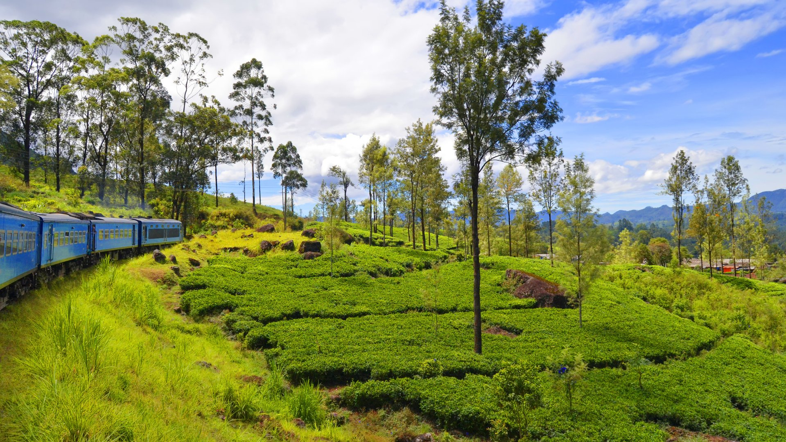
Nearby Attractions
Explore nature, culture, and memorable travel experiences around Bibile.
Bibile and the surrounding Uva Province offer a wealth of natural beauty, cultural heritage, and peaceful experiences. From misty hills and ancient forests to traditional villages and serene water bodies, there's something for every traveler. Let Hotel Canbo be your base for exploring this beautiful corner of Sri Lanka.
Attractions Near Hotel Canbo
Discover the beauty of Bibile and Uva Province.
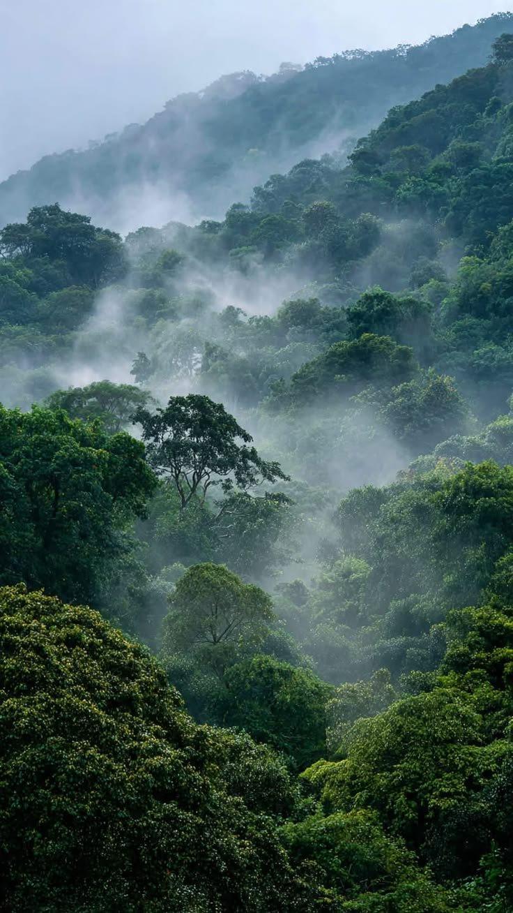
Madulsima — Scenic Hill Country
Experience the breathtaking beauty of Madulsima, known for its stunning hill country views, misty peaks, and cool climate. A perfect spot for nature lovers and photographers.
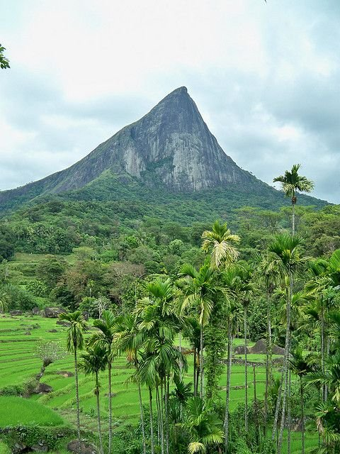
Nilgala Forest Area
Explore the pristine Nilgala Forest, home to diverse wildlife, ancient trees, and tranquil walking paths. An ideal destination for those seeking a connection with nature.
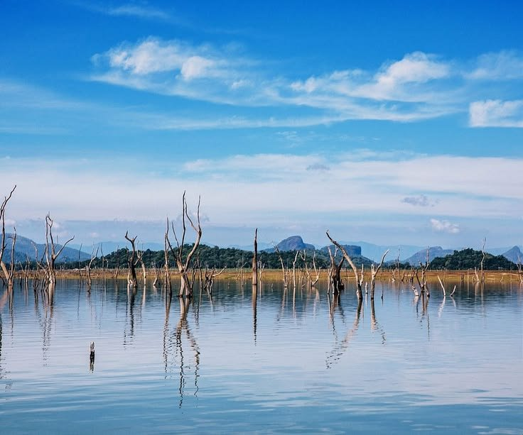
Gal Oya Region
Discover the scenic Gal Oya region, where you can enjoy boat rides, wildlife spotting, and the unique experience of crossing paths with elephants in their natural habitat.
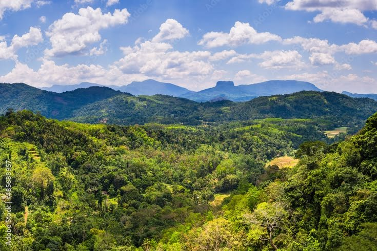
Rathugala Village Experience
Visit the traditional village of Rathugala for an authentic Sri Lankan village experience. Learn about local customs, traditional farming, and rural village life.
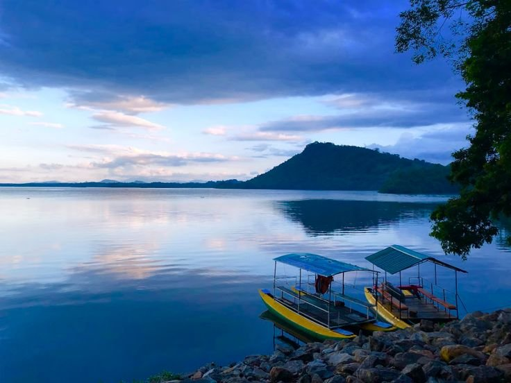
Sorabora Wewa
Sorabora Wewa is a historic reservoir with a unique ancient sluice gate. Enjoy the peaceful surroundings and learn about Sri Lanka's remarkable ancient irrigation systems.
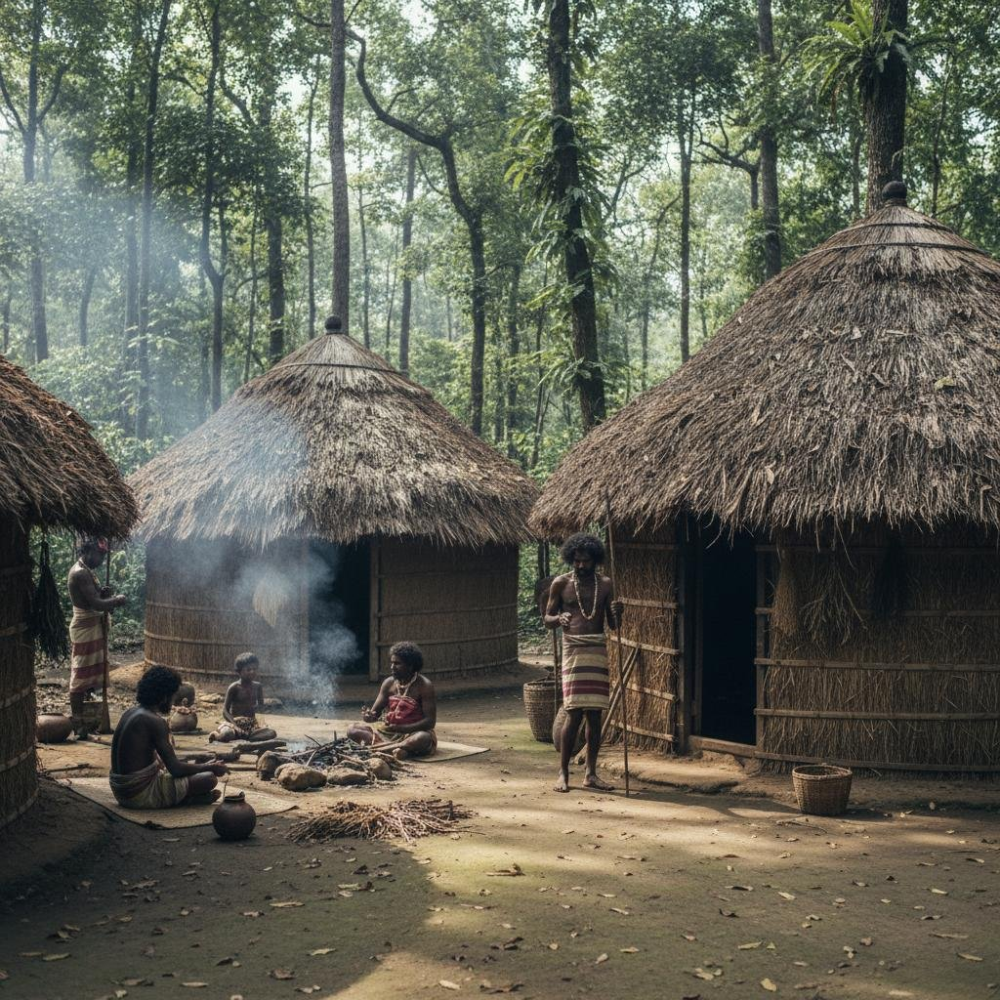
Dambana Indigenous Village
Visit Dambana, home to Sri Lanka's indigenous Vedda community. Gain insights into their traditional lifestyle, hunting practices, and cultural heritage.
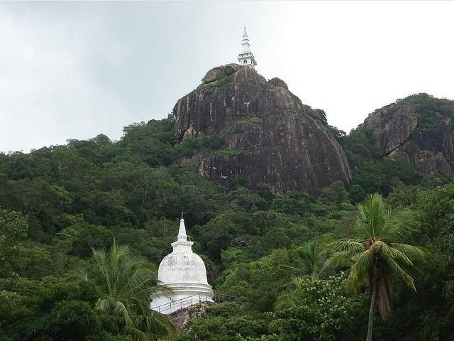
Local Temples Around Bibile
Explore the beautiful temples scattered around Bibile, each with its own unique architecture and spiritual significance. Experience the serenity of Sri Lankan Buddhist heritage.
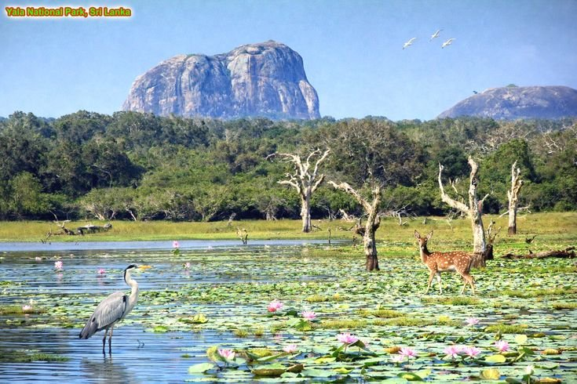
Scenic Countryside & Viewpoints
Take a leisurely drive or walk through the scenic countryside around Bibile. Discover hidden viewpoints, lush paddy fields, and the unspoiled beauty of rural Sri Lanka.
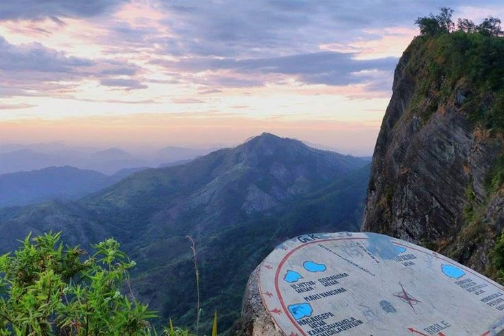
Madulsima Mini World's End
Madulsima Mini World's End offers one of the most spectacular viewpoints in Sri Lanka. Perched on the edge of a steep cliff, you'll enjoy panoramic views of the surrounding hills, valleys, and distant mountains. On clear days, you can see for miles across the unspoiled landscape. The journey to the viewpoint itself is an adventure through scenic tea plantations and mountain roads.
Best time to visit: Early morning for clear views
Suggested: Photography, hiking, picnic
Sorabora Wewa
Sorabora Wewa is an ancient reservoir built over 2,000 years ago, showcasing the remarkable engineering skills of ancient Sri Lankan civilization. The reservoir's unique stone sluice gate is an architectural marvel that still functions today. The peaceful surroundings make it a perfect spot for a relaxing afternoon walk, and the area is rich in birdlife.
Best time to visit: Late afternoon for sunset views
Suggested: Bird watching, photography, historical exploration
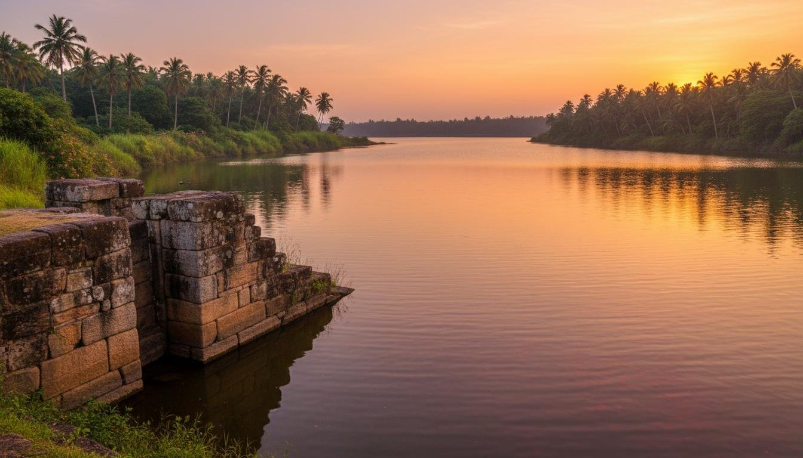
Things To Do Around Bibile
Nature Walks
Village Exploration
Sightseeing
Waterfall Visits
Wildlife Watching
Temple Visits
Local Food Tasting
Photography
Scenic Drives
Getting to Hotel Canbo
Discover the beauty of Bibile during your stay.
Let Hotel Canbo be your home base for exploring Uva Province.